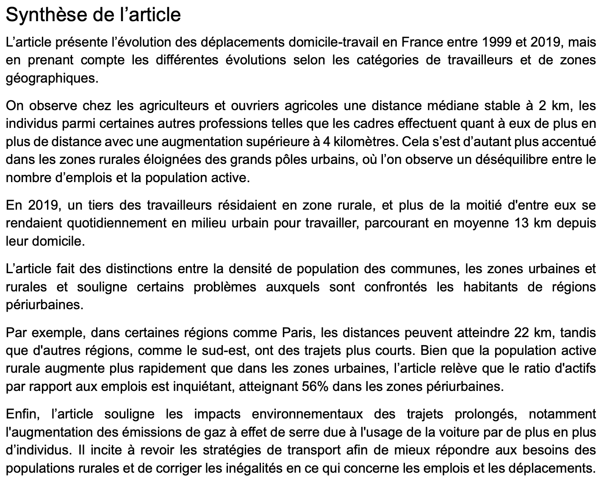
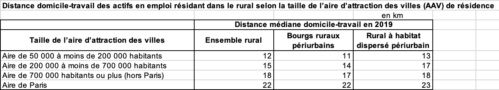
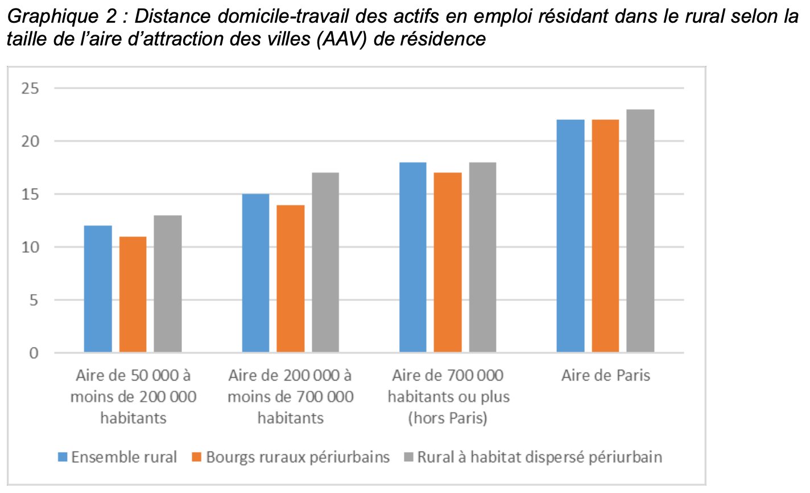
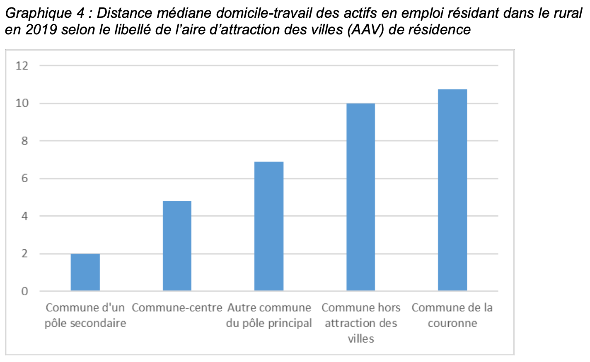
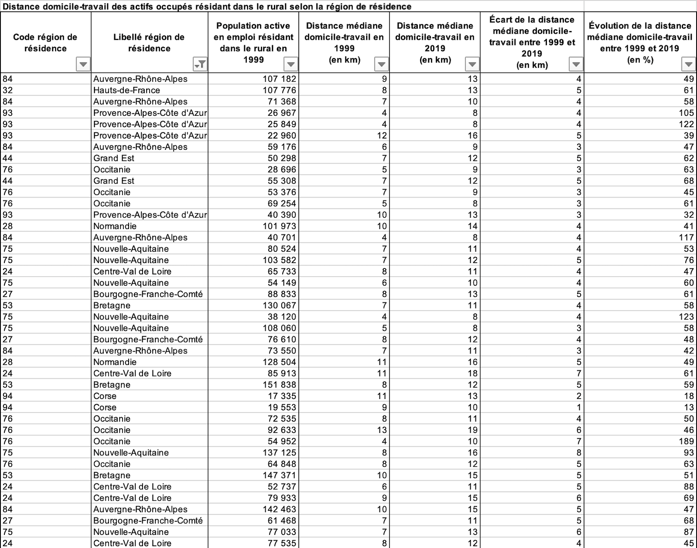
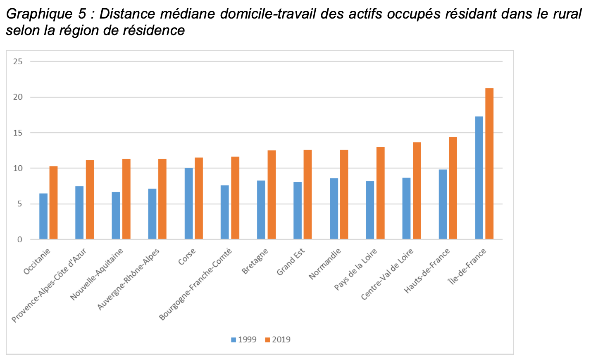

Cette capture d’écran présente une synthèse d'article décrivant les principales tendances des déplacements domicile-travail en France entre 1999 et 2019.
J’ai analysé et résumé les informations clés de l’article pour en extraire les éléments pertinents à l’étude des distances domicile-travail selon les catégories de travailleurs et les zones géographiques.
Cette preuve illustre la compétence AC 12.01, car j’ai su reconnaître que les données présentées comportent des variations géographiques et professionnelles à considérer pour garantir une analyse pertinente.
Cette capture d’écran montre le tableau des distances médianes domicile-travail en 2019 pour les actifs en emploi résidant dans le rural, selon la taille de l’aire d’attraction des villes.
J’ai analysé ces données pour comprendre les écarts de distance entre les différentes zones rurales (ensemble rural, bourgs ruraux périurbains et rural à habitat dispersé périurbain). J’ai ainsi pu observer que la distance augmente avec la taille des pôles urbains.
Cette preuve démontre que j’ai acquis la compétence AC 12.02, car j’ai su préparer et organiser les données pour une analyse pertinente, en distinguant les sous-catégories et en identifiant les variables pour une bonne interprétation.
Ce graphique présente la distance médiane domicile-travail en 2019 pour les actifs résidant dans le rural, selon la taille de l’aire d’attraction des villes. Il synthétise les données du tableau précédent en les représentant visuellement avec des barres colorées selon la catégorie (ensemble rural, bourgs ruraux périurbains, rural à habitat dispersé périurbain).
Cette visualisation m’a permis de comparer rapidement les écarts entre les catégories et de mettre en évidence la tendance croissante des distances lorsque la taille des aires augmente.
Cette preuve démontre que j’ai acquis la compétence AC 12.04, car j’ai su exploiter une représentation graphique pour mettre en évidence les relations entre variables et faciliter l’interprétation des résultats.
Ce graphique met en évidence les distances médianes domicile-travail des actifs en emploi résidant dans le rural en 2019, selon le libellé de l’aire d’attraction des villes. Il présente visuellement les écarts selon les catégories géographiques, ce qui permet d’observer les disparités de distance selon le type de commune (commune-centre, commune hors attraction des villes, etc.).
Cette représentation graphique m’a permis de comparer visuellement les distances médianes et de mieux comprendre les dynamiques territoriales.
Cette preuve démontre que j’ai acquis la compétence AC 12.03, car j’ai su mettre en place une synthèse graphique pertinente pour décrire une variable statistique et faciliter l’interprétation des résultats.
Cette capture d’écran présente un tableau détaillé indiquant la distance médiane domicile-travail des actifs résidant dans le rural selon les régions de résidence, pour les années 1999 et 2019. Le tableau inclut également l’écart de distance et son évolution en pourcentage.
Cette analyse m’a permis de mettre en évidence les variations de cette distance, entre les différentes régions.
Cette preuve démontre que j’ai acquis la compétence AC 12.01, car j’ai su prendre en compte les caractéristiques géographiques (variations selon les régions) pour interpréter les données. Elle valide également que j’ai acquis la compétence AC 12.02, puisque j’ai vérifié la qualité du tableau pour en faire une analyse fiable.
Ce graphique présente la distance médiane domicile-travail des actifs en emploi résidant dans le rural en 1999 et 2019, selon la région de résidence. J’ai représenté ces données sous forme de barres groupées (bleu pour 1999, orange pour 2019) afin de comparer l’évolution des distances dans chaque région.
Cette représentation graphique m’a permis d’identifier rapidement les écarts entre les régions.
Cette preuve démontre que j’ai acquis la compétence AC 12.04 car j’ai su mettre en place une synthèse graphique pertinente pour mettre en évidence les relations temporelles entre les distances domicile-travail et les régions de résidence.
Excel
Dans cette SAÉ, j’ai été placé dans la posture d’un statisticien chargé d’explorer un jeu de données fourni dans une logique d’analyse descriptive. L’objectif était de produire des représentations simples mais pertinentes pour synthétiser l’information et mettre en évidence les éventuelles relations entre les variables.
J’ai mobilisé la ressource statistique descriptive 1 (R1.04) pour comprendre les mécanismes de construction des graphiques et indicateurs (moyenne, écart-type, etc.).
J’ai réalisé une exploration statistique du jeu de données en construisant des tableaux croisés dynamiques, des diagrammes en barres et des indicateurs comme la moyenne ou les fréquences. Ces éléments m’ont permis d’observer les distributions, de comparer les modalités et d’identifier des liens entre certaines variables. J’ai ensuite interprété ces résultats dans le contexte de la problématique proposée.
J’ai appris à exploiter un jeu de données dans une logique exploratoire, à représenter les variables de façon synthétique, et à interpréter les résultats obtenus.
Compétences développées :
— AC 12.01 |Réaliser que les sources de données ont des caractéristiques propres à considérer (variation, précision, mise à jour...)
J’ai su tenir compte des variations géographiques et temporelles des distances domicile-travail et des types de territoires dans l’interprétation des données et des graphiques.
— AC 12.02 |Comprendre qu’une analyse correcte ne peut émaner que de données propres et préparées
J’ai vérifié la qualité et l’organisation des tableaux (libellés, structures) avant de réaliser les synthèses graphiques pour garantir la pertinence des résultats.
— AC 12.03 |Comprendre l’intérêt des synthèses numériques et graphiques pour décrire une variable statistique
J’ai produit des graphiques clairs et pertinents pour représenter les distances médianes domicile-travail selon les catégories territoriales ou professionnelles.
— AC 12.04 |Comprendre l’intérêt des synthèses numériques et graphiques pour mettre en évidence des liaisons entre variables
J’ai comparé les distances domicile-travail entre années ou zones géographiques pour identifier des tendances, et pour démontrer des relations entre plusieurs variables.